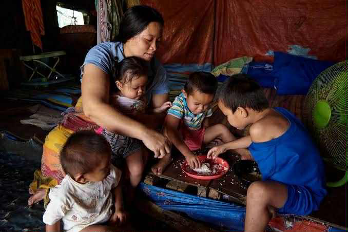
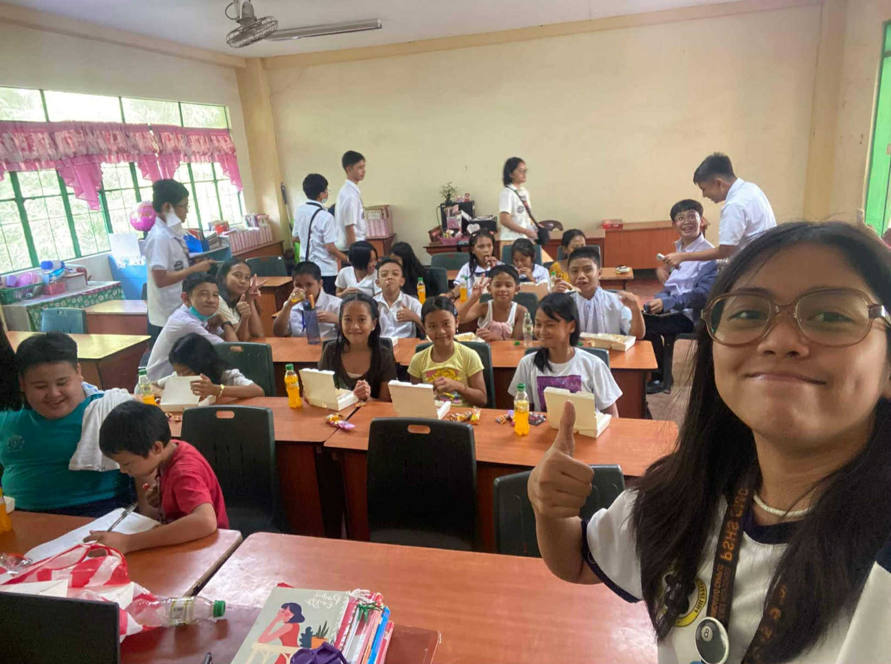
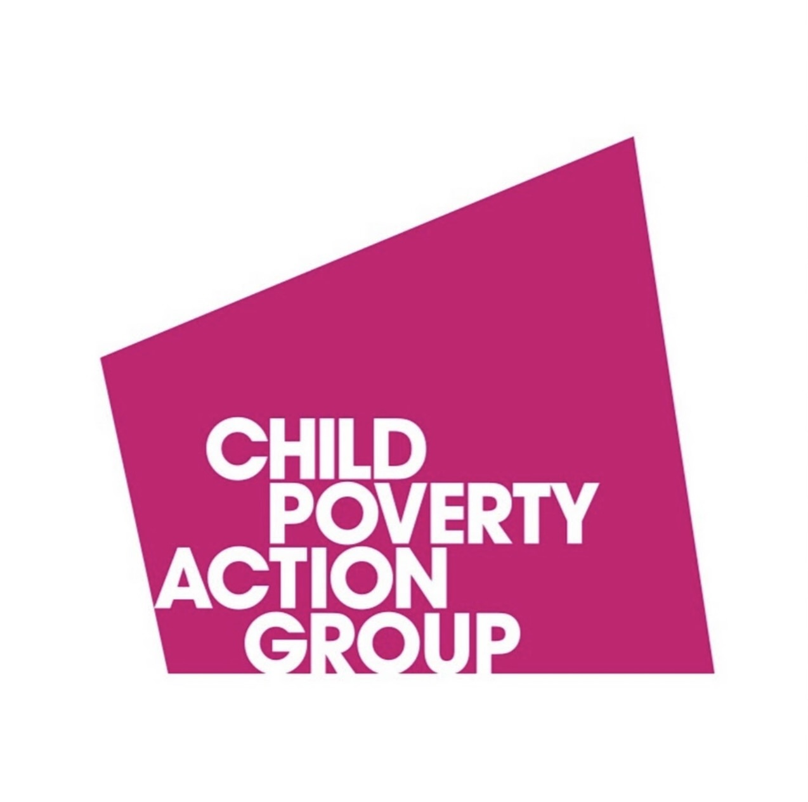
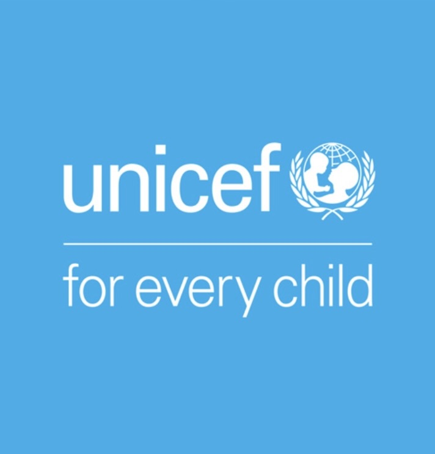

The Root Cause
In the Philippines, especially parents that work in poor areas, they find themselves trapped in poor work conditions and low paychecks. These regions lack to offer the people stable jobs with decent wages, contributing more to child poverty. Not only that but the lack of access to quality education and healthcare are factors of inequality as children in poor areas cannot attain basic education because of lack of school supplies, transportation issues, and run down classrooms where attaining basic healthcare still remains a dire challenge. Rural areas of this country do not have equal opportunities to its citizens unlike those in the city area which remains a contributing factor to cold poverty. When natural disasters come, it can displace families, ruin their homes, and halt education.
The Effects
The effects of the number of people in poverty does not only affect the individual itself but also the community it has. One example of it is elevated dropout rates, where a country has a high drop out rate, meaning to say its education system is failing to keep its students which leads to a less prosperous society. Another thing is limited access to proper nutrition, where most of the children who live in poverty face malnutrition. Not only does it limit their physical growth, but poverty can also affect their mental health, in a way that when kids are dealing with this kind of circumstance, they often feel stressed and worried. Most of them feel the burden to get their family out of poverty at such a young age, leading to many children dropping out of school to go to work.
Related Literatures About the Cause and Effect
Child Poverty Action Group
 Visit Related Literature!National Institutes of Health
Visit Related Literature!UNICEF
 Visit Related Literature!Impact on Community

If you were to look at this animated image, this is the home condition of children in poverty. If you were to be put in their shoes, wouldn’t you also feel bad? These children did not choose to be born out of this circumstance but they live with it and are pressured by their family to bring them out of it.
Now that you know the root causes and effects that child poverty may bring, we now understand more about their life circumstances and by knowing, it is our duty to help them. If you do not know how to help, below are ways on how to help or you can research for more. You are not only doing this for the children but also for your community and nation. For the greater good of everyone!
How Can You Help?
Below are just three ways on how to help children in poverty, but you can research for more ways or do your own little thing for this advocacy. It does not matter what way you do it, as long as it helps the children and it comes from your heart, that is what matters.
Raise Awareness
One way you can raise awareness as a student is by educating yourself with these kinds of societal problems. Be aware of its root causes, effects, and possible ways on how to solve these problems. You can start off small by posting on social media so that others become more aware.
Volunteer Your Time
One way you can volunteer your time is by volunteering for specific organizations that do outreach, teach children for free, and help in food drives or clothing drives. These simple ways can greatly help these children in need. Time sure is precious so let us use that time helping others in need!
Advocate For Change
Instead of you participating in an organization, why not make your own organization? Be involved in youth councils and community groups that support this kind of advocacy. Give out free lunches, advocate for reduced transportation costs, and give education free!